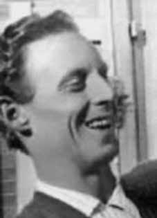

José
Huberto
Bronca
CIRCUNSTÂNCIAS DA MORTE
De acordo com o Relatório Arroyo, José Huberto Bronca teria sido visto com vida por seus companheiros pela última vez em 25 de dezembro de 1973, no episódio que ficou conhecido posteriormente como o Chafurdo de Natal. O relatório da CEMDP elenca outras duas versões para o seu paradeiro. A primeira, registrada pelo sobrevivente da guerrilha Dower Moraes Cavalcante em relatório apresentado à Comissão Justiça e Paz em 10 de dezembro de 1991, menciona que José Huberto teria caído em uma emboscada na área da Formiga e, morto, teria sido enterrado na mesma região. Já o Relatório do Ministério da Marinha, de 1993, afirma que ele foi morto em 13 de março de 1974iv . Por fim, outra data de morte é apontada no Relatório do CIE, Ministério do Exército, que apresenta uma lista de “subversivos” participantes da guerrilha do Araguaiav . O documento informa que José Huberto teria morrido em 13 de maio de 1974.
According to the Arroyo Report, José Huberto Bronca was last seen alive by his companions on December 25, 1973, in the episode that later became known as the Christmas Wallowing. The CEMDP report lists two other versions of his whereabouts. The first, recorded by guerrilla survivor Dower Moraes Cavalcante in a report presented to the Justice and Peace Commission on December 10, 1991, mentions that José Huberto had been ambushed in the Formiga area and, having died, was buried in the same region. The 1993 Ministry of the Navy Report states that he was killed on March 13, 1974iv. Finally, another date of death is indicated in the CIE Report, Ministry of the Army, which presents a list of “subversives” participating in the Araguaiav guerrilla. The document states that José Huberto died on May 13, 1974.
Según el Informe Arroyo, José Huberto Bronca fue visto con vida por última vez por sus compañeros el 25 de diciembre de 1973, en el episodio que luego se conoció como el Revolcarse de Navidad. El informe del CEMDP enumera otras dos versiones sobre su paradero. El primero, registrado por el sobreviviente guerrillero Dower Moraes Cavalcante en un informe presentado a la Comisión de Justicia y Paz el 10 de diciembre de 1991, menciona que José Huberto había sido emboscado en la zona de Formiga y, habiendo muerto, fue enterrado en la misma región. El Informe del Ministerio de Marina de 1993 señala que fue asesinado el 13 de marzo de 1974iv. Finalmente, otra fecha de muerte es señalada en el Informe CIE, Ministerio del Ejército, que presenta una lista de “subversivos” que participan en la guerrilla de Araguaiav. El documento señala que José Huberto falleció el 13 de mayo de 1974.